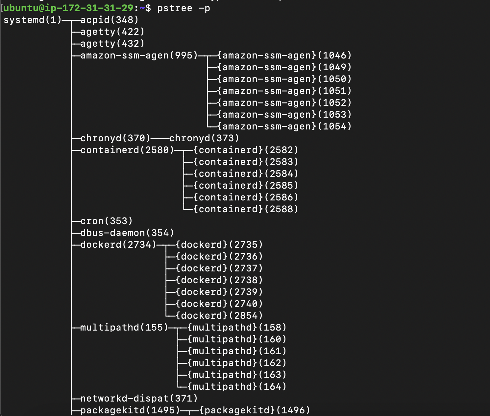
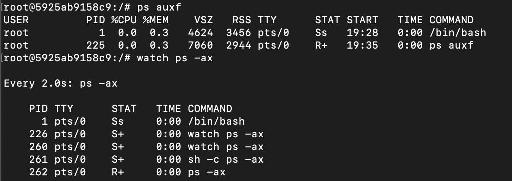
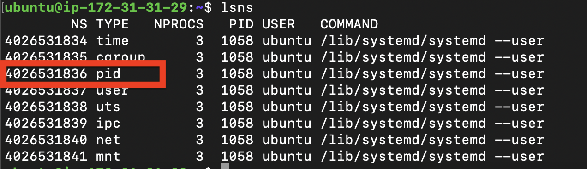
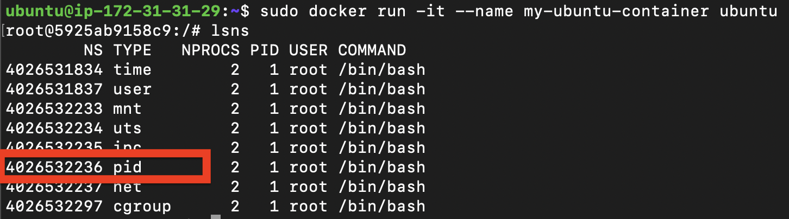

Docker [E04]: Docker Architecture
Table of Contents
Overview
Up until now, we have discussed the isolation of processes using namespaces and cgroups. We also discussed how the combination of these two technologies can have huge benefits. In this post, we will discuss the architecture of docker and how it uses namespaces and cgroups to achieve the isolation of processes.
Docker Architecture
 Docker is a vague name when comes to talking about “Docker” 🥸 What matters to us is what is it composed of?
Docker is a vague name when comes to talking about “Docker” 🥸 What matters to us is what is it composed of?
1. Docker Deamon
This is the core component of Docker. It is a long-running process that manages docker objects such as images, containers, networks, and volumes. It is the one that is responsible for creating, running, and monitoring the containers. Docker Deamon awaits for request from the Docker Client to execute commands such as docker run, docker build, docker pull, etc. The Docker Deamon is also responsible for communicating with other daemons to manage Docker services.
2. Docker Client
The Docker Client comes in two forms:
- Docker CLI: which handles the commad line requests.
- Docker Compose: which can execute multiple commands at once to create more complex containers.
The two forms of the Docker Client communicate with the Docker Deamon using the Docker Rest API. Once These Requests are received by the Docker Deamon, it will execute the commands as dissussed above.
3. Docker Registry
Docker Registry is a service that stores Docker images. Docker Hub is the default registry that comes with Docker. This is primarly the place where you store the blueprints of your containers, so that you can pull them later to create the same container on any infrastructure.
4. Docker Containers
Docker containers are the running instances of Docker images. They are isolated from each other using namespaces and cgroups. They are also isolated from the host machine. This means that the containers are isolated from each other and from the host machine. This is the main reason why Docker is so popular.
Docker in Action
Let’s now apply what we have learned so far. We will create an Ubuntu container and see how it is isolated from the host machine. We will also see how the isolation is achieved using namespaces.
1. Docker Installation
I installed Docker on my Ubuntu 20.04 server. Then ran pstree -p. It shows two new processes
dockerd: which is the Docker Deamon that is waiting for any commands from the Docker Client.containerd: is a container runtime that is responsible for managing the lifecycle of containers. It is created by default by the Docker Deamon. 
2. Creating an Ubuntu container
docker run -it --name my-ubuntu-container ubuntu
# then inside the conatiner I will create another process using the watch command
root@5925ab9158c9:/# watch ps -ax
If we take a look again from host shell, we can find the ubuntu container running as a child from the containerd process. The container has a child watch process. This means the inner processes are visible to the host machine. Now let’s take a look from inside of the new container.
The bash process (the Ubuntu container) is having a PID of 1 same as the systemd on the host. This means that the container is isolated from the host machine. It is also isolated from the other containers. This is achieved using the PID namespace.
3. Host namespaces vs Container namespaces
Let’s take a look at the namespaces of the host machine and the container. We will use the lsns command to list the namespaces of the host and the container.
-
Host namespaces: 
-
Container namespaces: 
So, different namespaces are created for the container 🥳. If we trace the system calls used by the containerd process, we will find that it uses the same unshare and clone commands that we used in the previous posts to create these namesapces. Each container has a set of requirements that docker fullfills, but the underlying technology is the same.